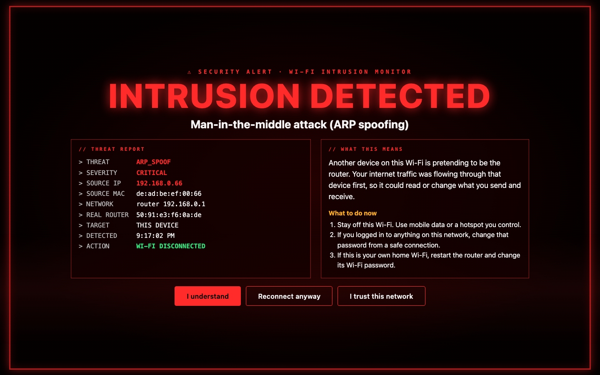

Know when someone on your Wi-Fi goes after your laptop.
Wi-Fi Intrusion Monitor watches the network you join, at a café, a hotel, an airport or at home. When another device on that network attacks your laptop, it turns your Wi-Fi off and tells you what happened and what to do next.

-
Someone pretending to be the routerMAN-IN-THE-MIDDLE · ARP SPOOFINGYour traffic passes through their device, so they can read or change it.Caught when the router's hardware address changes while you are on the same network.
-
Fake website addressesDNS HIJACKINGYou type your bank's name and land on a copy built to take your password.Caught by checking the Wi-Fi's answers against addresses that never change and against encrypted DNS.
-
A broken padlockHTTPS INTERCEPTIONThey swap security certificates so they can read encrypted pages.Caught when a secure request to a known server fails its certificate check.
-
Someone probing your laptopPORT SCANNINGThey look for an open door into your computer.Caught by decoy doors that no honest phone, laptop or TV ever opens.
-
A fake copy of a Wi-Fi you trustEVIL TWINSame network name, weaker security, attacker in control.Caught when a name you know shows up with weaker security. Needs Location access.
Install in two minutes
- Download the .dmg, open it, and drag Wi-Fi Intrusion Monitor into Applications.
- Open the app. It is not from the App Store, so macOS blocks it the first time. Go to System Settings → Privacy & Security, scroll down and click Open Anyway.
- If your firewall is on, macOS asks whether the app may accept incoming connections. Click Allow. The decoy doors need it to see scans.
- Optional: from the menu bar, choose Show Wi-Fi names and allow Location access. macOS hides Wi-Fi names from apps without it, and the evil-twin check needs the name.
A dot appears in your menu bar. 🟢 watching · 🟠 recent warning · 🔴 alert on screen · ⚪️ paused. Click it to pause, see recent alerts, trust a network or show a test alert.
- Download the .exe and move it somewhere it can stay, such as your Documents folder. Double-click it. There is nothing to install.
- The app is not signed, so Windows may show Windows protected your PC. Click More info, then Run anyway.
- Windows Firewall asks whether to allow the app. Tick Private and Public networks and click Allow. Airport and hotel Wi-Fi count as Public. This needs an administrator password; without it, port-scan detection stays off.
- Optional: turn on Settings → Privacy & security → Location → Let desktop apps access your location. Windows 11 hides Wi-Fi names without it, and the evil-twin check needs the name.
A shield appears in the system tray at the bottom right (it may be under the ^ arrow). Its dot shows green watching, amber recent warning, red alert on screen, grey paused. Right-click it to pause, see recent alerts, trust a network or show a test alert.
What it looks at, and what it leaves alone
It does
- Read your router's address and the devices your computer already knows about.
- Look up a few public websites, such as Google and your bank, through the Wi-Fi and through Cloudflare's encrypted DNS, and compare the answers.
- Keep a log of alerts on your computer.
It does not
- Read the content of your browsing or messages.
- Send anything about you to me or anyone else.
- Read your location, even with Location access on.
- Replace antivirus. It sees attacks aimed at your laptop, not what other devices do to each other.
Help build the phone version
Phones are harder. iPhones do not let apps read the network or turn Wi-Fi off. Android allows part of it through a local VPN, which can block an attacker instead of disconnecting.
If you build iOS or Android apps and want to work on this, get in touch.